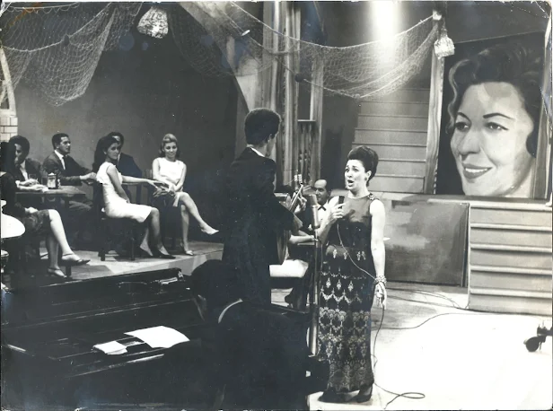
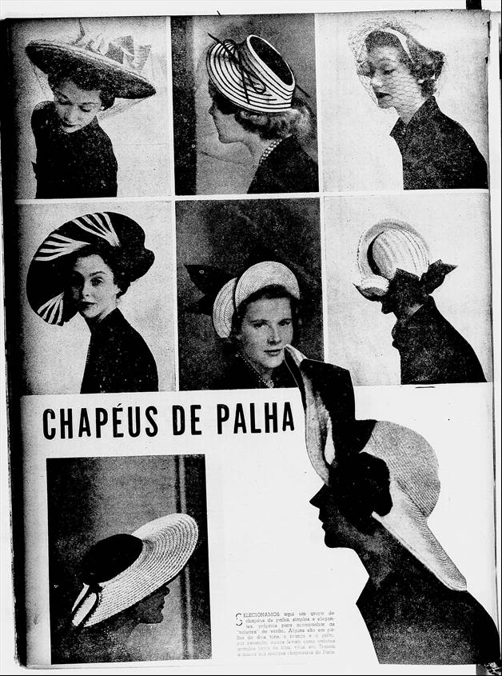
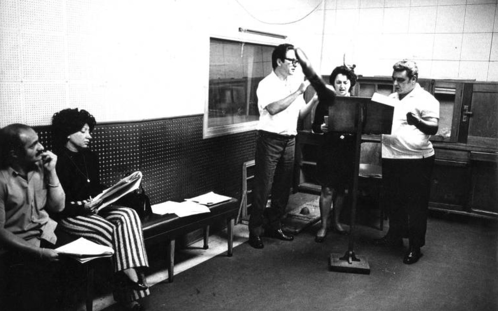
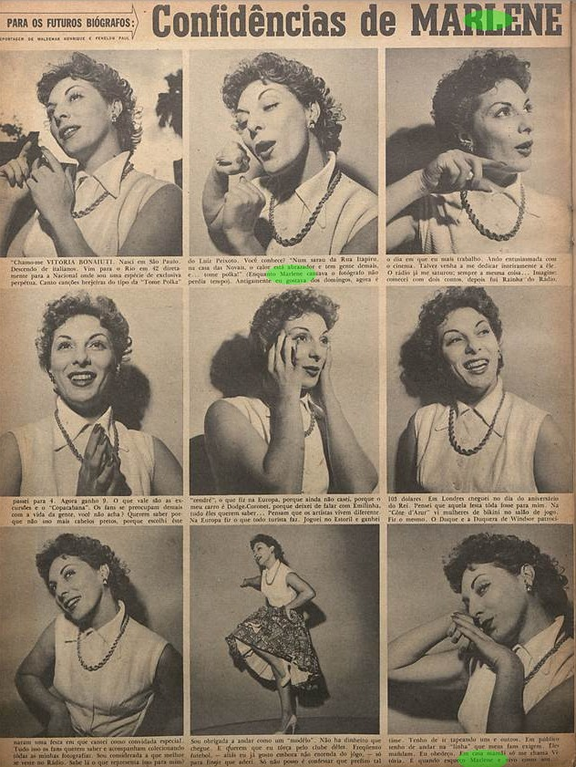
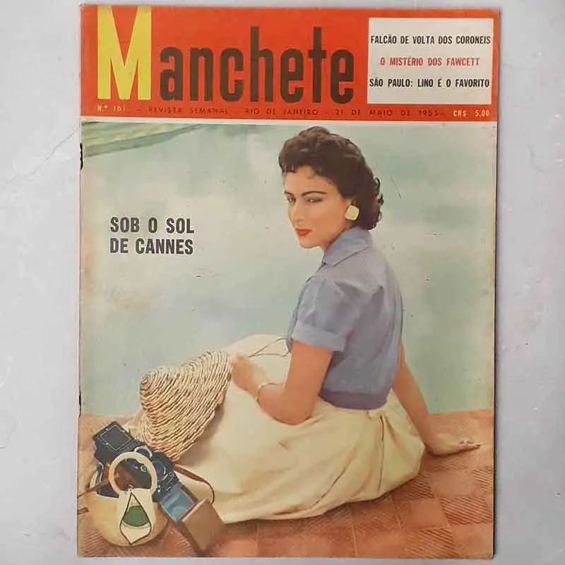
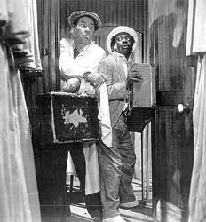
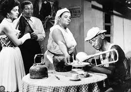

Introdução
Contexto da época
O Brasil dos anos 1950: rádio como centro da cultura de massa, elegância urbana influenciada pelo cinema e por Paris, e uma sociedade dividida entre a tradição e a modernização acelerada.
Cenário histórico
Entre o fim do governo Vargas (1954) e a construção de Brasília (JK, 1956–60), o Brasil vive euforia modernizante. Nas grandes cidades — Rio e São Paulo — o crescimento industrial muda hábitos de consumo e a vida cultural.
O rádio no centro
A Rádio Nacional do Rio de Janeiro domina o imaginário popular. Programas de auditório reúnem multidões. Cantoras como Emilinha Borba e Marlene são disputadas por fãs. O locutor é o rosto — ou a voz — de uma era.
Moda feminina
- New Look de Dior adaptado ao clima e orçamento brasileiro
- Cintura marcada, saia midi godê ou lápis, corpete estruturado
- Tecidos: cetim, organza, tule, crepe, voile
- Luvas curtas obrigatórias em ocasiões sociais
- Batom vermelho ou borgonha, permanente no cabelo
- Acessórios: pérolas, broche, chapéu, scarpin bico fino
Moda masculina
- Terno de dois botões, lapela estreita, ombros estruturados
- Calça com dobra, em linho ou gabardine
- Camisa social branca ou listrada, colarinho americano
- Chapéu fedora de feltro ou panamá de palha no verão
- Gravata de seda fina, alfinete ou prendedor
- Cabelo gomado com risco lateral, bigode fino opcional
Silhuetas femininas
- Vestido de auditório — saia rodada, corpete sem alça, tule
- Conjunto saia + blusa — uso cotidiano elegante, gola rendada
- Vestido tubinho — lápis midi, para mulher trabalhadora
- Traje de trabalho — saia discreta, blusa fechada, sem adornos
Diferenças entre classes
- Alta: importados ou costureiras de atelier, joias verdadeiras
- Média: modas reproduzidas por costureiras locais, tecidos nacionais
- Popular: algodão, chitão, cores simples, sem adorno
- Profissionais técnicos: funcionalidade sobre estética, avental
Referências visuais da época
Revistas, roupas, acessórios e fotografia

Cantora de rádio
anos 1950 — BR
anos 1950 — BR

Vestido de cetim
moda brasileira 1950
moda brasileira 1950
Terno masculino
locutor / apresentador
locutor / apresentador

Interior de estúdio
de rádio anos 1950
de rádio anos 1950

Marlene

Revista

Machete, 1955
Moda por classe social
Como o figurino comunica pertencimento nos anos 1950 brasileiros
Classe alta
Elite social e artística

Características visuais
- Vestidos importados ou de atelier de alta costura
- Joias verdadeiras — pérolas, diamantes, ouro
- Tecidos nobres: cetim, organza, veludo
- Luvas longas, chapéus elaborados
- Perfume importado, maquiagem profissional
Classe média
Profissionais urbanos

Características visuais
- Modas reproduzidas por costureiras locais
- Tecidos nacionais de boa qualidade: crepe, popelina
- Poucas joias — bijuteria e pérolas falsas
- Roupas bem conservadas, passadas com cuidado
- Maquiagem discreta mas presente (batom, pó)
Classe trabalhadora
Operários e técnicos

Características visuais
- Funcionalidade acima de tudo
- Algodão simples, cores neutras ou escuras
- Avental, jaleco ou uniforme de trabalho
- Calçado resistente e fechado
- Sem adornos — ou adornos guardados para a saída